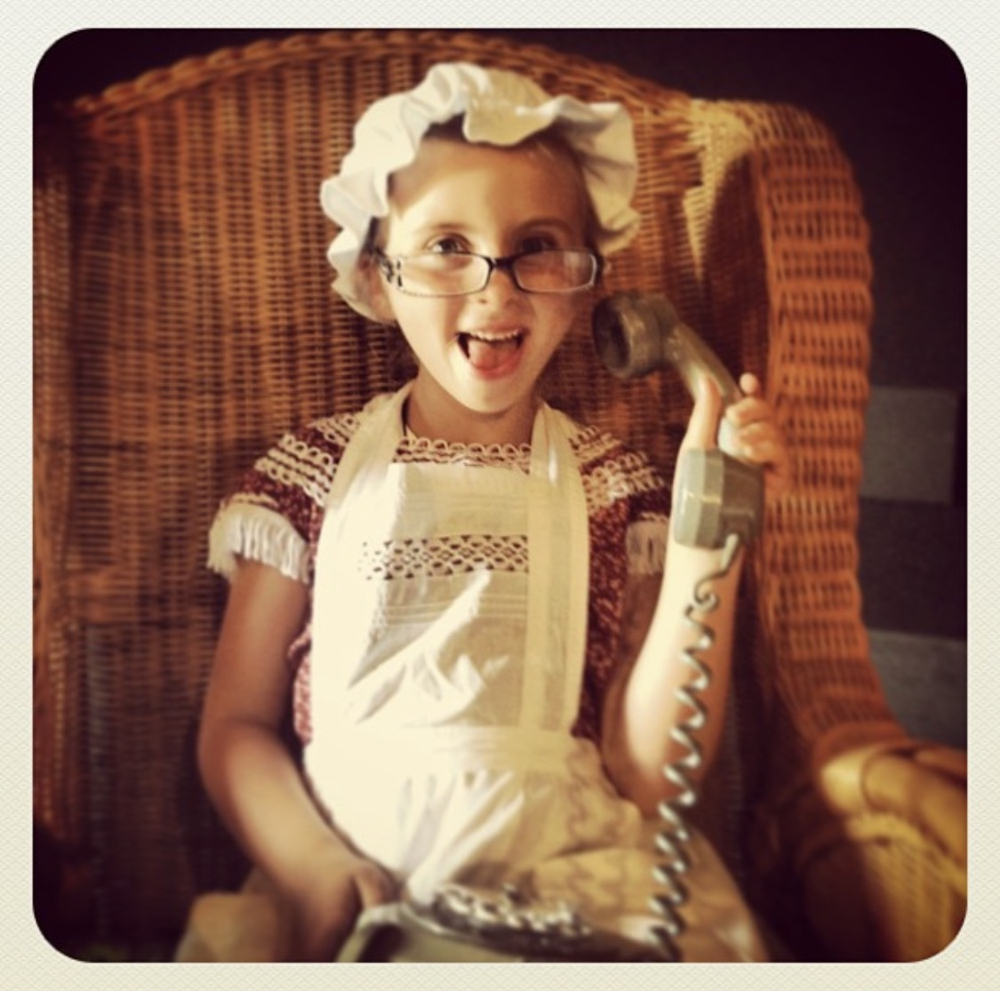
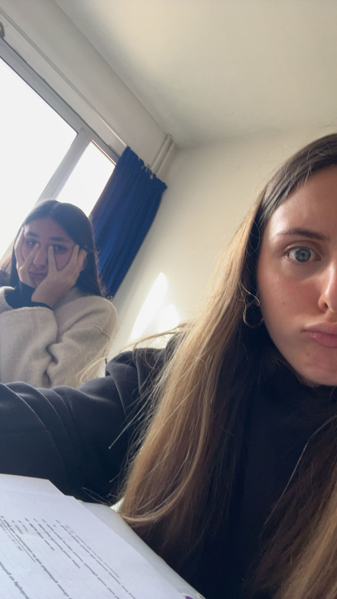

Mon Histoire.
L'Appel de la Scène
Enfant, le monde du spectacle me fascinait. Inspirée par ma marraine (actrice, chanteuse et présentatrice), je rêvais d'être actrice. J'ai pratiqué le théâtre pendant quatre ans. Cette expérience a été fondamentale pour m'aider a vaincre ma timidité, mais également pour développer mon imagination et un fort intérêt pour le cinéma.

Le Déclic des "Édits"
Au fil du temps, mon rapport à l'image a évolué. Je me suis amusée à faire des "édits" vidéo sur TikTok. C'est là que j'ai eu un véritable déclic : je prenais bien plus de plaisir à assembler les plans, choisir la musique, et caler le rythme qu'à jouer moi-même.

Se Structurer : La STMG
Au lycée, j'ai fait un choix totalement assumé : le Bac STMG spécialité Mercatique. Les filières générales ne me correspondaient pas. La STMG m'a permis de comprendre le marketing, la communication, et le travail en équipe. Ces compétences en analyse et gestion de projet sont aujourd'hui cruciales pour mon métier de monteuse.

La Révélation : Le BUT MMI
Suite à des interventions dans mon lycée, j'ai découvert le BUT MMI en Corse. Ça a été une évidence. Cette formation lie tout ce que j'aime : la communication, l'audiovisuel et la création visuelle. Aujourd'hui, j'y perfectionne mes compétences derrière sur les logiciels, confirmant mon ambition de devenir monteuse de clips musicaux.